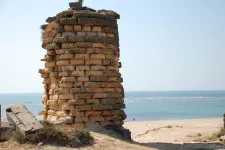
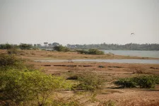

muldwarka


A small coastal village known as Mul Dwarka near Kodinar in the district of Junagad is one of the claimant of the original Dwarka of Mahabharata.
The proximity with Junagadh hills on the north and sea on the south the town has been associated with Dwarka (Sankalia, 1966).
An ancient temple is situated on a raised land close to the sea.
The temple is in dilapidated condition and is not under worship.
The shrine is dated to the post 10th century AD (Sampura, 1968).
A circular structure of about 4 m in height constructed with similar type of dressed limestone blocks as of the temple in situated close to ancient temple.
Locally this structure is called as Diva Dandi (lighthouse).
If this structure has served as lighthouse then this may be the oldest remains of lighthouse on the Saurashtra coast.
Local fishermen informed that a few anchors similar to those of Indo-Arabia type were present but now they have either buried under new port or other private buildings, which cannot be noticed.
An ancient well was noticed which is still used for drinking water source near the jetty.